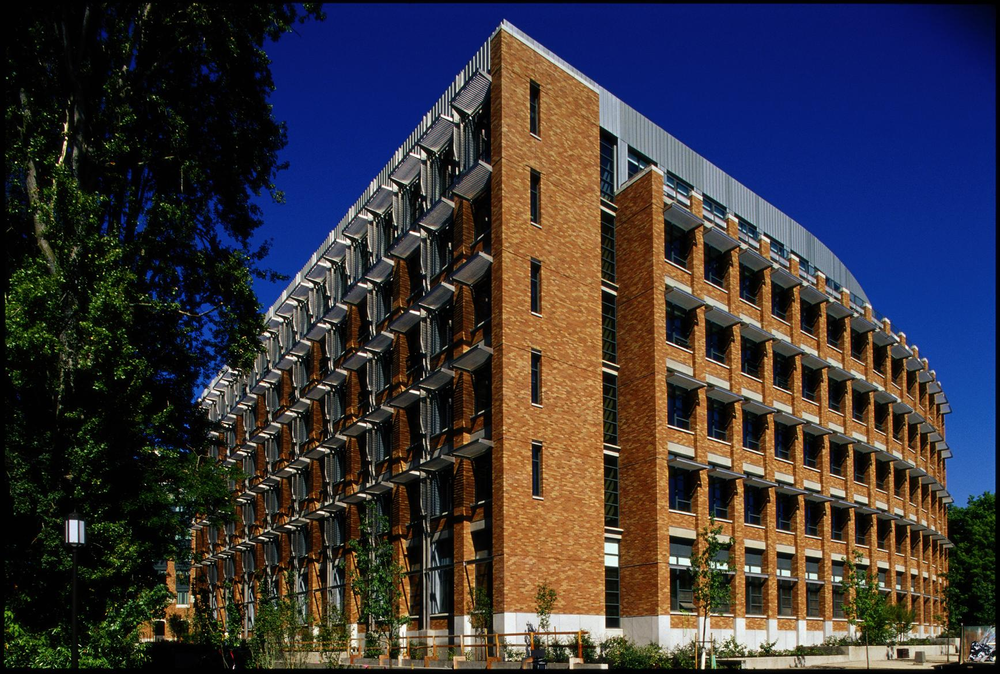

Today marks the beginning of something important for me. After months of learning, experimenting, and building small projects, I finally decided to create a portfolio that reflects who I am and who I want to become. This blog will be my space to track my progress, document what I learn, and reflect on the challenges and breakthroughs along the way.
My long‑term goal is to study computer science at the University of Washington. I know the path won’t be easy, but I’m excited to grow, improve, and push myself through each project I take on. This first post is a small milestone — the first commit in a much larger journey.
I long was unsure on which path to take, but I've realized that I really enjoy working with computers & technology, and thus I'm going to go for it, I'm in grade 10 and I have to make something of myself, and I think this is the best path for me. I'm really excited to see where this journey takes me, and I'm looking forward to sharing it with all through this blog.
Over the next few months, I’ll be working on an algorithm visualizer, a small machine learning project, and continuing my novella. Each of these projects represents a different part of who I am, I've always been unsure and indeceisive about what I want to do, I don't think it's a path of convenience, I think it's going to wound up nothing but inconvenient, but I've got no choice, and If I'm going to have to be stuck doing something my whole life, It'd might as well be something I love.

I don't think I've ever been the greatest student, I'm gimmicky with plenty of tucks and tricks, strong but weak, but I'm fairly confident If I put my time into it, I can make it.
My goal in life is never to shoot for the stars, I simply wish for security, attend UW, secure a decent job, and settle down somewhere in the evergreen city, and grow old doing something I like, maybe contribute to my local community using my skillset.
It's about time to finally kick it up a gear, and give my eleven, I'll continue tinkering with this portfolio & begin on an algorithimic visualizer after next week. I am yet to finish the creation of the footer, and my achievements page is blank, I've never contributed, never attended competitions, I was in math club for a year, and robotics for two, thus, I must develop my foundation before preceeding, I'm hoping to participate more in the following weeks.
I've began creating a 2 year plan in order to build up to University Of Washington. Including Course Selection & Extracurricular Projects.